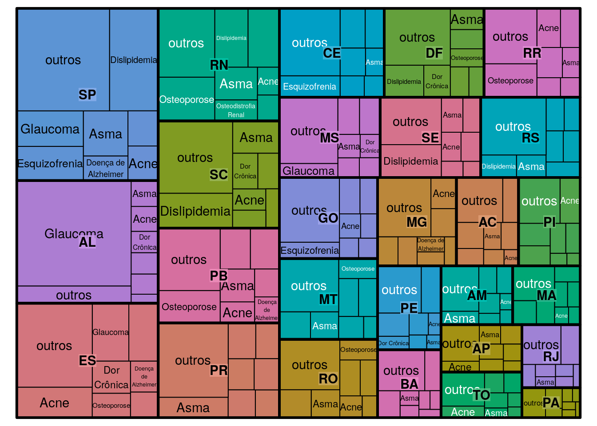
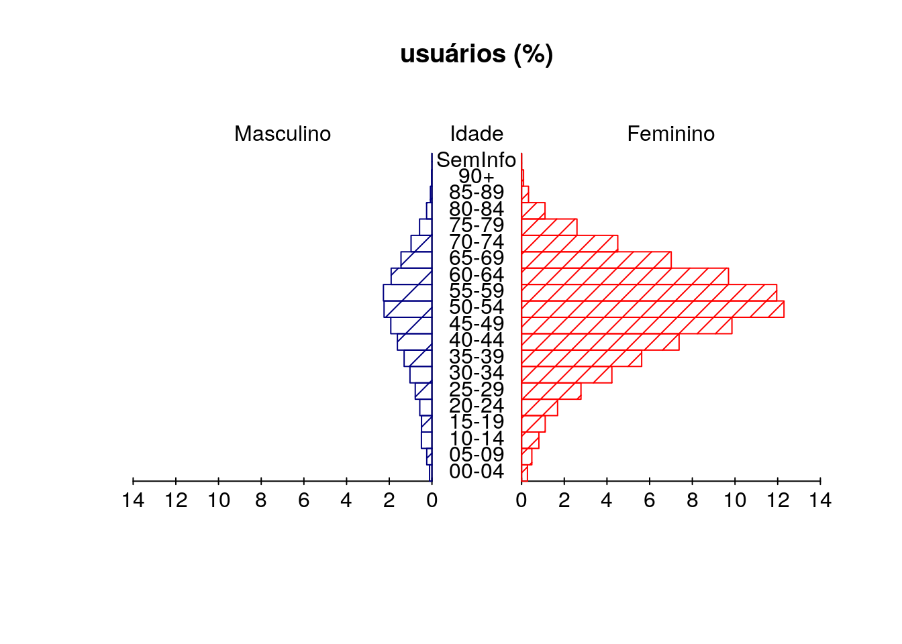

2 Componentes
2.1 Selecione
2.2 Explore
teste
2.2.1 Mapa de árvore - Quem - usuários do PCDT
2.2.1.1 Conceituação
2.2.1.2 Interpretação
2.2.1.3 Usos
2.2.1.4 Limitações
2.2.1.5 Fonte
2.2.1.6 Métodos de Cálculo
2.2.1.7 Categorias Sugeridas para Análise
2.2.1.8 Dados Estatísticos e Comentários
2.2.1.9 Notas
library(treemap)
tf_pcdt_cns = read.csv(file="~/Dropbox/sabeis/dataset/db_sabeis.tf_pcdt_cns.csv")
treemap(tf_pcdt_cns,
index=c("sg_uf","no_pcdt"),
vSize="qt_cns_mes",
type="index",
title=""
)
2.2.2 Pirâmide etária - Usuários ao mês por habitante segundo o PCDT
2.2.2.1 Conceituação
2.2.2.2 Interpretação
2.2.2.3 Usos
2.2.2.4 Limitações
2.2.2.5 Fonte
2.2.2.6 Métodos de Cálculo
2.2.2.7 Categorias Sugeridas para Análise
2.2.2.8 Dados Estatísticos e Comentários
2.2.2.9 Notas
2.2.2.10 Conjunto de dados e Código-fonte
Baixe o arquivo csv contido na pasta dataset.
library(pyramid)
library(knitr)tf_pcdt_paciente = read.csv(file = '../dataset/db_sabeis.tf_pcdt_paciente.csv')
# ajusta para o formato percentual
tf_pcdt_paciente$qt_paciente_m =
tf_pcdt_paciente$qt_paciente_m/tf_pcdt_paciente$qt_registros_pcdt*100
tf_pcdt_paciente$qt_paciente_f =
tf_pcdt_paciente$qt_paciente_f/tf_pcdt_paciente$qt_registros_pcdt*100| qt_paciente_m | qt_paciente_f | sg_faixa_etaria | |
|---|---|---|---|
| 9 | 3.754098 | 4.491803 | 40-44 |
| 10 | 4.114754 | 4.901639 | 45-49 |
| 11 | 4.754098 | 6.557377 | 50-54 |
| 12 | 5.655738 | 6.393443 | 55-59 |
| 13 | 4.836066 | 6.704918 | 60-64 |
pyramid(
subset(tf_pcdt_paciente, co_pcdt == 10)[,c(2,3,6)],
Llab="Masculino",Rlab="Feminino",
Lcol="navy",
Ldens=5,
Rcol="red",
Rdens=10, GL=FALSE, Clab = "Idade", main = "usuários (%)"
)